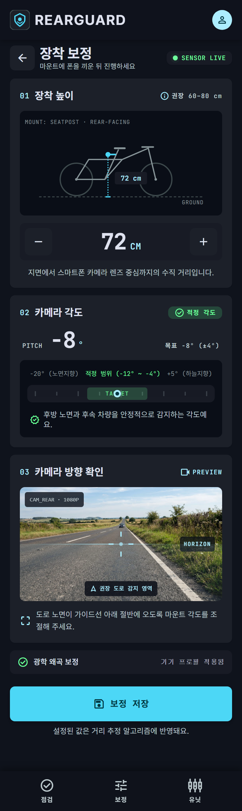
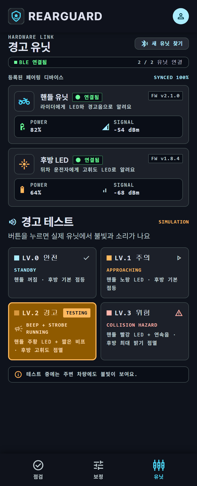
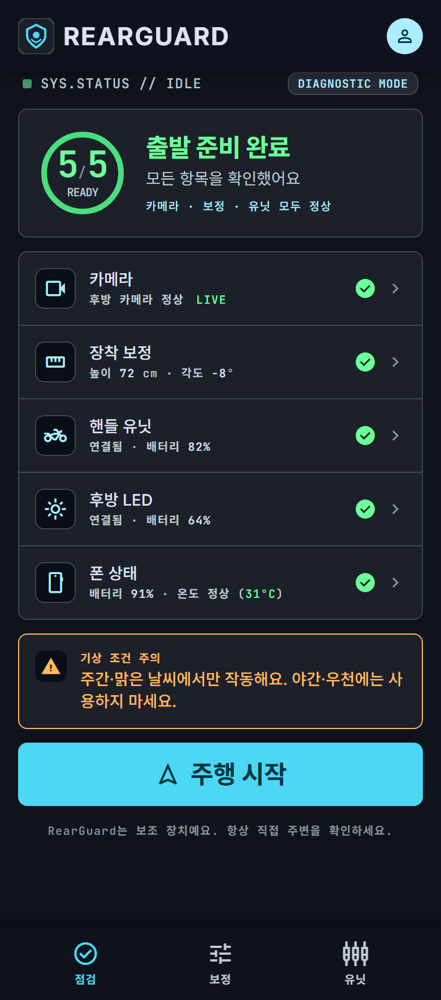
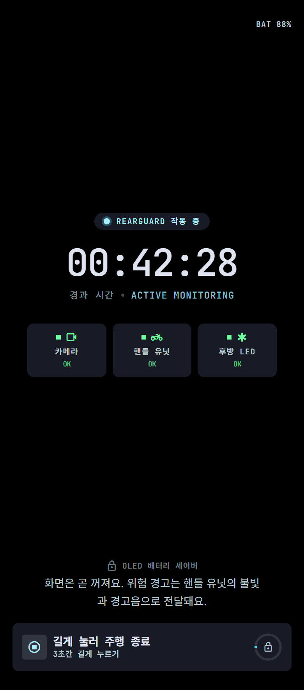
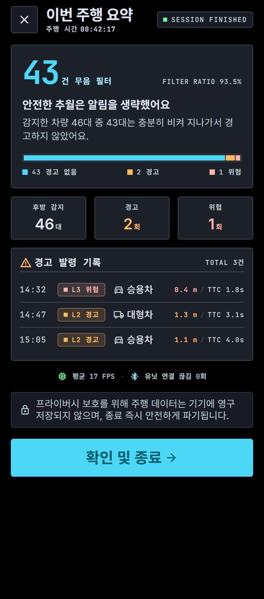

뒤에서 오는 위험,
미리 봅니다.
자전거 뒤에 단 카메라가 뒤차를 보고, 위험하게 지나갈 차만 골라 알려줍니다. 레이더는 ‘뭔가 온다’를 알려주고, RearGuard는 ‘위험하게 온다’를 알려줍니다.
뒤는 안 보이고, 레이더는 너무 자주 울립니다
뒤가 안 보입니다
뒤에서 빠르게 다가오는 차는 라이더가 직접 볼 수 없습니다. 고개를 돌려 확인하면 그 순간 앞을 놓칩니다.
자주 울리는 경고는 결국 꺼집니다
기존 후방 레이더는 멀리 비켜 가는 차에도 울립니다. 너무 자주 울리면 라이더는 경고를 끄거나 무시하게 됩니다.
| 기존 후방 레이더 | RearGuard | |
|---|---|---|
| 알 수 있는 것 | 뒤차와의 거리, 다가오는 속도 | 차 종류, 옆으로 얼마나 붙어서 지나갈지 |
| 언제 울리나 | 차가 가까우면 늘 | 가깝게 스치거나 부딪힐 것 같을 때만 |
| 필요한 장비 | 수십만 원대 전용 기기 | 이미 가진 스마트폰 + 작은 경고등 |
필요한 건 ‘뒤에 차가 있다’가 아니라 ‘위험하게 지나간다’는 판단입니다.
보고, 판단하고, 알립니다
모든 판단은 인터넷 없이 기기 안에서 끝납니다. 카메라에 찍힌 순간부터 경고등이 켜지기까지 0.2초 안을 목표로 합니다.
봅니다
안장 아래 스마트폰 카메라가 뒤쪽 도로를 봅니다.
판단합니다
AI가 차 종류를 알아보고, 몇 초 뒤 옆으로 얼마나 가깝게 지나갈지 예측합니다. 인터넷 없이 폰 안에서 바로 계산합니다.
알립니다
위험하면 뒤차에게는 후방 경고등으로, 라이더에게는 핸들 알림등의 불빛과 소리로 알립니다.
위험한 정도에 따라 3단계로 알립니다
뒤차가 충분히 비켜 지나갈 것 같을 때
1.5m보다 가깝게 지나갈 것 같을 때 (트럭·버스는 2m)
2초 안에 부딪힐 것 같을 때
스마트폰 하나와 작은 경고등 두 개
스마트폰이 판단하면, 두 경고등이 블루투스로 신호를 받아 불을 켭니다.
스마트폰 · 두뇌
안장 아래에 뒤를 보도록 달고, 카메라로 보고 판단합니다. 라이더가 이미 가진 폰을 씁니다.
후방 경고등
뒤차 운전자에게 자전거가 있다는 것을 밝은 불빛으로 알립니다.
핸들 알림등
라이더에게 불빛 색과 소리로 위험 단계를 알립니다.
폰이 멈춰도 후방 경고등은 꺼지지 않습니다. 1초 동안 신호가 없으면 경고등이 스스로 기본 불빛으로 돌아갑니다.
지금은 시제품 검증 단계라 스마트폰 대신 노트북이 판단하고, 경고등 두 개는 실제로 만들어 연결합니다.
앱은 대시보드가 아니라 장착·점검 도구
폰은 시트포스트에 뒤를 보도록 달리기 때문에 주행 중에는 라이더가 화면을 볼 수 없습니다. 주행 중 경고는 핸들 유닛의 LED와 경고음이 맡고, 앱 화면은 장착할 때와 출발 전, 주행을 마친 뒤에만 씁니다.





화면을 누르면 실제 동작하는 화면이 새 창으로 열립니다. 앱은 최종 제품 구상이며, 지금 시제품 단계에서는 만들지 않습니다.
이 네 가지를 해내면 성공입니다
아직 검증 전인 목표입니다. 검증을 마치면 실제 측정값으로 바꿉니다.
아직 못 하는 것도 솔직하게 적었습니다
- 밤과 비 오는 날 — 어두우면 차를 잘 알아보지 못해서, 지금은 낮·맑은 날에만 씁니다.
- 가파른 언덕과 과속방지턱 — 도로가 평평하다고 가정하고 거리를 재기 때문에 잠깐 거리가 틀릴 수 있습니다.
- 밤에도 쓰기 — 뒤차 헤드라이트 두 개의 모양으로 거리와 속도를 알아냅니다.
- 킥보드·공유 자전거 — 전동 킥보드와 공유 자전거에도 달 수 있는 거치대를 만듭니다.
안전 안내: RearGuard는 라이더를 돕는 보조 장치이며, 라이더의 주의 의무를 대신하지 않습니다. 항상 직접 주변을 확인하고 방어 운전을 해 주세요.